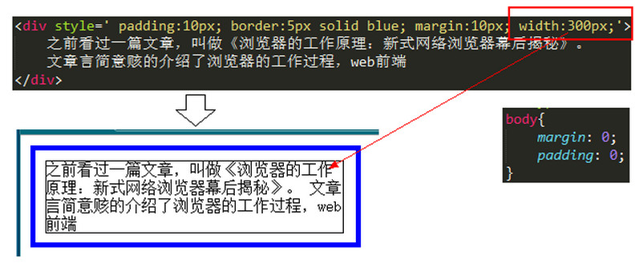

--2016年5月16日
块级元素 -- 在html中<div>、<p>、<h>、<ul>、<li>、<form>就是块级元素
块级元素特点：
1、每个块级元素都从新的一行开始，并且其后的元素也另起一行。（真霸道，一个块级元素独占一行）
2、元素的高度、宽度、行高以及顶和底边距都可设置。
3、元素宽度在不设置的情况下，是它本身父容器的100%（和父元素的宽度一致），除非设定一个宽度。
内联元素 -- 在html中，<span>、<a>、<label>、<strong>、<em>、 就是典型的内联元素（行内元素）（inline）元素。
内联元素特点：
1、和其他元素都在一行上；
2、元素的高度、宽度及顶部和底部边距不可设置；margin padding 可用
3、元素的宽度就是它包含的文字或图片的宽度，不可改变。 内联块状元素
内联块状元素 -- <img><input>标签就是这种内联块状标签。
同时具备内联元素、块状元素的特点 元素特点：
1、和其他元素都在一行上；
2、元素的高度、宽度、行高以及顶和底边距都可设置。
盒子模型--由内向外依次是 content, padding, border, margin
盒子模型的高度和宽度的计算:(此处只考虑标准文档流)
1. 在盒子模型中，我们设置的宽度都是 内容宽度(width:300px)，不是整个盒子的宽度。
2. 而整个盒子的宽度是：（内容宽度 + border宽度 + padding宽度 + margin宽度）之和。
3. 下面会讲到盒子宽度的计算

那么，就会出现一个问题：如果父容器宽度不变，我们手动增大margin、border或padding其中一项的宽度值，都会导致内容宽度的减少。
极端情况下，如果内容的宽度压缩到不能再压缩了（例如一个字的宽度），那么浏览器会强迫增加父容器的宽度。这不是我们想要看到的。
box-sizing :
box-sizing：content-box | border-box 默认值：content-box
content-box： padding和border不被包含在定义的width和height之内。
对象的实际宽度等于设置的width值和border、padding之和，即 ( Element width = width + border + padding) 此属性表现为标准模式下的盒模型。
border-box： padding和border被包含在定义的width和height之内。
对象的实际宽度就等于设置的width值，即使定义有border和padding也不会改变对象的实际宽度，即( Element width = width )
纵向margin的重叠(塌陷) :
margin属性在纵向相遇时,会出现塌陷,或者叫吃掉的现象.表现行为:
margin值相同 --> 距离为一个margin值, 吃掉一个margin值
margin值不同 --> 距离为margin较大者, 大的margin值吃掉小的margin值